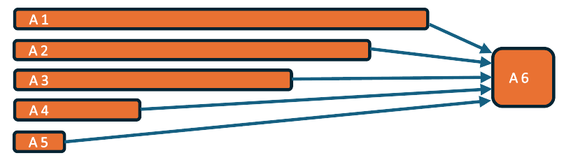
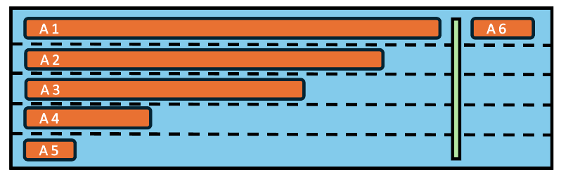
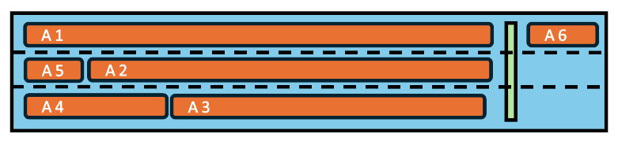
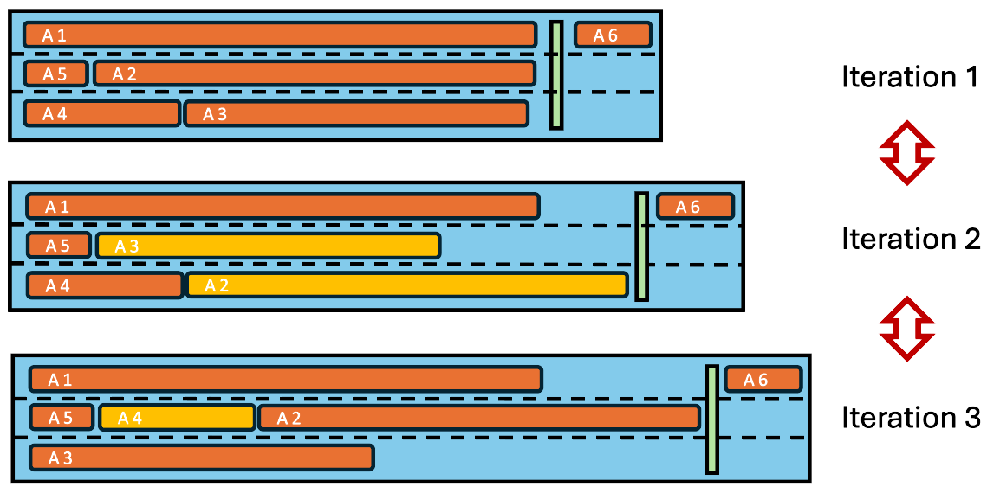

Fixed execution order framework (FEO) (v0.5 beta)#
Fixed execution order framework
|
status: valid
security: NO
safety: ASIL_B
|
||||
Feature flag#
To activate this feature, use the following feature flag:
experimental_feo
Abstract#
This contribution request describes the fixed execution order and reprocessing framework (FEO), which is intended to support data-driven or time-driven applications. It provides a fixed execution order for activities and the necessary infrastructure to reprocess activities in a simulated environment.
Motivation#
There are several automotive use-cases that require a fixed and deterministic computation of tasks. This is particularly crucial for safety-critical applications where the execution order of tasks is essential for the correct operation of the system. The FEO framework is designed for applications supporting data-driven and time-driven applications mainly in the ADAS domain, ensuring a fixed execution order and supporting reprocessing. (See also Support for Data-driven Arc... (stkh_req__app_architectures__support_data), : need:stkh_req__app_architectures__support_time, stkh_req__dev_experience__reprocessing)
Key aspects of S-CORE and FEO framework are:
a framework for applications (not for platform services)
for data-driven and time-driven applications (mainly in the ADAS domain)
support fixed execution order
supporting reprocessing
In the following we will explain and argue how and with which major components these aspects can be implemented.
Applications#
The framework is used to build applications
Multiple applications based on the framework can run in parallel on the same host machine
Applications based on the framework can run in parallel with other applications not based on the framework
The framework does not support communication between different applications (except via service activities, see below)
Activities#
Applications consist of activities
Activities are a means to structure applications into building blocks
Activities have init(), step() and shutdown() entry points
The framework provides the following APIs to the activities running on it:
Read time (feo::time)
Communicate to other activities (feo::com)
Log (feo::log)
Configuration parameters (feo::param)
Persistency (feo::pers)
Tracing (feo::tracing)
There are two types of activities:
Application activities
Service activities
Application Activities#
Application activities must only use APIs provided by the framework as defined above
Application activities are single threaded, they can not run outside of their entry points, they must not spawn other threads or process
Activities can be implemented in C++ or Rust, mixed systems with both C++ and Rust activities shall be supported.
Service Activities#
Service activities are a means to interact with the outside world, e.g. via network communication, direct sensor input or direct actuator output
Service activities may also use APIs external to the framework (e.g. networking APIs, reading from external sensor devices, writing HW I/O, etc.)
Service activities run at the beginning (“input service activity”) and at the end (“output service activity”) of a task chain (see below)
Input service activities provide the input values to the application activities within the task chain, by means of communication
All input service activities must finish execution before the first application activity is run. This can be achieved by proper setup of the chain dependencies (see below)
There must be at least one input service activity
Output service activities consume output values from the application activities calculated within the task chain an provide them to the outside world
All output service activities must run after all application service activities have finished execution. This is achieved by proper setup of the chain dependencies (see below)
There must be at least one output service activity
Communication#
Application type activities can only communicate to other activities within the same application and using the provided communication API
Communication consists of sending and receiving messages on named topics
The receiver of a message on a topic does not know the sender, instead it only relies on the message itself independent of the source of the message
There can only be one sender per topic but multiple receivers
Optional: there can be multiple senders per topic
There is no publish/subscribe mechanism accessible to activities, instead the set of known communication topics and the assignment of which activity sends and receives to/from which topic is “runtime static”
“runtime static” means “static after the startup phase”, i.e. during startup, the framework can configure or build up communication connections, but as soon as the run phase starts (where the activities’ step() functions are called), the connections are fixed and will not change any more.
Communication relations are typically configured in configuration files
Messages/topics are statically typed
Only messages of the matching type can be sent/received on a specific topic
The binary representation of messages is defined by the framework in order to support communication between activities implemented in different languages (C++/Rust)
Message types may be primitive types or complex (nested) types
Complex types can be built by using structs and arrays of types
Sending a message by an activity involves the following steps:
Call API to acquire a handle to a message buffer for a certain topic
Fill data into the provided memory buffer
Call API to send the message
Reception of a message by an activity involves the following steps:
Use API to receive message from a certain topic, this returns a handle to a data buffer
Read message data from data buffer
The receiver can not modify the message, the framework will enforce this, for example by using read-only types or by configuring memory protect of the OS
Queuing of topics:
Queuing can be enabled per topic, a queue of length N means that the last N messages are kept for a specific topic
Receivers have access to the last N elements, reading an element from the queue by a receiver doesn’t change the queue, i.e. doesn’t remove it from the queue. instead all receiver will always see the last N elements
Optional: a queue pointer to the element last read is maintained per receiver. However, the queue with its buffers still only exists once per topic. If one receiver receives an element from the queue, its queue pointer is incremented so that next time it reads the next element, this does not affect the queue pointers of other receivers
Queue enable and queue length are “runtime static” configuration settings
Process/Thread/Activity Mapping#
An application consists of one or more processes
One of the processes is the primary process
If there is more than one process, the other processes are secondary processes
There can be one or more threads per process
The number of processes and threads is statically defined and does not change once the application has been started (runtime static)
Activities are statically mapped to threads within processes within the application
There can be multiple activities mapped to the same thread
There is one executable per process, so an application may consist of multiple executables
Each executable contains part of this framework as well as the activities mapped to the corresponding process
It is assumed that an external entity starts all the executables belonging to the same application. The reason for this is, that for security reasons, only very specific entities should have the ability to create processes
The executables belonging to an application are grouped (e.g. in the filesystem) so that it’s clear that they belong together
One reason for having multiple processes per application is to achieve Freedom From Interference for safety relevant applications
Static mapping of activities to threads#
As pointed out above, FEO activities are required to be mapped to threads in a static way. The rationale behind this requirement is:
Calling activity functions init(), step() and shutdown() from a single pre-defined thread allows implementations to make use of thread-local optimizations such as thread-local variables.
Calling an activity’s step() function from different threads in different iterations of the task chain may cause execution time jitter e.g. from unpredictable cache misses or different properties of the processor cores the respective threads may be assigned to.
Most importantly, a dynamic assignment of activities to threads may result in non-deterministic variations of the task-chain execution time.
To understand how a dynamic thread assignment can cause execution time variations, consider the following example (sub-) task chain.

Here, activity 6 depends on, i.e. must be executed after activities 1 to 5. The length of the bars is intended to indicate the relative computation time needed by the respective activity on a single processor core. It is assumed that all of these activities will be executed in the same process.
In a simple approach, each of the activities 1 to 5 could be assigned to its own thread and activity 6 could be executed subsequently in one of these threads as shown in the figure below. Each blue “lane” indicates one thread.

If each thread runs on a separate core and execution is not interrupted by other tasks, the length of the blue box is related to the total execution time of the task chain.
Approximately the same total execution time can be achieved with only 3 threads (on three cores), if the tasks are assigned in an optimized way:

If, on the other hand, activities are assigned to the same 3 threads in a dynamic way, the execution time may vary unpredictably, because of the possibly varying execution sequence of activities, as can be seen below.

Lifecycle#
The lifecycle of an application consists of 3 phases:
startup phase
run phase
shutdown phase
During startup phase, the primary process connects with the secondary processes (if present), in order to:
Build up connections for communication (e.g. find shared memory segments provided/consumed)
Connect to the parameter service
Coordinate the init and later the shutdown process
Coordinate the execution of the task chain (see below)
During the shutdown phase, the primary process coordinates the shutdown of all secondary processes
The connection between primary and secondary processes is kept up as long as the application is running
If the connection breaks down unexpectedly while the application is running, the involved processes terminate (either by a command from the primary process or by detecting connection loss to the primary process)
Activity Init:
At the end of the startup phase, the framework will invoke the init() entry point of each activity
The init() method will run in the thread assigned to the activity.
The order in which init() is called for different activities is arbitrary, it may happen in parallel or sequentially.
Activity Shutdown:
At the beginning of the shutdown phase, the framework will invoke the shutdown() entry point of each application
The shutdown() method will run in the thread assigned to the activity.
The order of invoking the shutdown() entry points across activities is not defined, invocation may happen in parallel or sequentially
Scheduling#
Activities are arranged in a task chain
There is exactly one task chain per application
The task chain describes the execution order of the activities in the run phase
Task chains run cyclically, e.g. every 30ms
Optional: task chains can be triggered on event
All activities are executed once per task chain run
All activities finish within a single task chain run
Running an activity means that the framework is calling its step() function within the process/thread it has been mapped to
The execution order is defined by a dependency model:
Each activity can depend on N other activities in the same task chain
An activity’s step() function gets called as soon as the step() functions of the activities it depends on have been called
The framework takes care to run the activities in this order, independent of the thread/process the activity is mapped to
While the order is guaranteed, there is no guarantee that an activity is run immediately after all its dependencies have finished. For example if two activities mapped to the same thread are ready to run at the same time, they can still only run one after the other
Note however, that for a particular (static) setup of threads, processes and activity mapping, the invocation delay is deterministic (apart from differences in the activity execution times)
The execution order and timing of an activity are independent of any communication that activity may perform.
The dependencies should be defined by the application developer in a way so that processing results passed via communication are available when they are needed (if an activity needs an output of another activity it sets that other activity as its dependency and therefore will only run once the other one is finished and therefore has produced the results the first one needs)
Executor and Agents#
The coordinating entity in the primary process is the “executor”
The executor coordinates the invocation of the activities in the order as described above
As a central entity, the executor is able to trace and monitor the system behavior as sequence of activity invocations (see below)
The actual activity invocation is done by an “agent”
The agent exists in each process belonging to an application
The agent connects to the executor during the startup phase
The agent takes invocation commands sent by the executor and executes them in its local process on behalf of the executor
Tracing#
The framework can make use of the tracing API (feo::tracing) to trace the program flow, mainly for debugging purposes.
The tracing events generated by the tracing API can be recorded for later inspection e.g. using a UI like Google Perfetto or Eclipse TraceCompass.
Performance#
The framework is designed to ensure deterministic execution order and timing of activities, supporting safety-critical applications in the automotive domain. In this domain the footprint of the framework is crucial especially w.r.t impact of computation load and latency.
Error Handling#
Possible error cases during the different FEO life cycle states shall be handled as follows. For now, the descriptions are focussed on the intended implementation for S-CORE v0.5. Potential adaptations for S-CORE v1.0 have been noted down in the next Section.
- Independent of state
If the primary process dies, the external lifecycle management shall kill all dependent processes.
If a secondary process dies, the lifecycle management shall send a termination signal to the primary process. The primary process shall call the shutdown function of all remaining activities in arbitrary sequence and terminate itself.
- State: Lifecycle Manager creates all processes (primary & secondaries)
If not all secondaries connect to the primary in time, the primary will terminate itself. The startup functions shall not be triggered.
- State: Lifecycle Manager has created all processes (primary & secondaries), all secondaries have connected to the primary
- If an error occurs during the execution of a startup function, the primary process shall abort calling startup functions
and terminate itself. For all of the activities whose startup functions have already been called successfully, the corresponding shutdown functions shall be executed in arbitrary sequence.
During initialization (i.e. in the startup function of an activity), activities shall check for resource allocation and report an error to the executor in case of failure.
If a timeout occurs during startup, stepping or shutdown of an activity, the primary process shall shutdown all successfully started activities in arbitrary sequence and terminate itself.
If not all activities reach their initialized state within a certain period of time (startup timeout), the primary process shall shutdown all successfully started activities in arbitrary sequence and terminate itself.
- State: Lifecycle Manager has created all processes (primary & secondaries), all secondaries have connected to the primary, all activities have been started up successfully
If an activity fails in the step function, the primary process shall call shutdown for all activities in arbitrary sequence and terminate itself.
If activities do not meet their intermediate (time/memory/cpu-) budgets the issue shall be detected and handled outside of FEO. (Resource supervision and quotas will be defined in a separate feature request, if needed.)
- State: Shutdown of activities
If an activity fails in the shutdown function, the primary process shall shutdown all remaining activities and terminate itself.
Extended features for S-CORE v1.0#
The following features will not be implemented as part of S-CORE v0.5, but have been noted down as potential extensions for v1.0. They shall be considered as drafts only.
External state#
Depending on the reprocessing scenario (see below) it might be necessary to put the activities into a well defined state. This can either be done by providing all the input to the activities which they need to get into that state (which could involve many task chain invocations). Another way is to let the framework record activity state just as it records communication messages
External state is a means to make activity state recordable
Using external state, activities don’t hold their state in activity local variables (like C++ member variables) but in a state storage provided by the framework. This way, they “do not remember anything” from the last task chain invocation. Instead, on every new task chain invocation, they first read in the external state from the framework provided storage, then potentially manipulate the state based on their inputs and then store it back for the next task chain invocation
Recording#
As a central entity, the executor is able to record the system behavior as sequence of activity invocations.
The framework can record all messages going over its communication topics
For each message the recording includes:
topic
data
timestamp
sender [optional]
The framework can record certain execution events:
task chain start/end
init/step/shutdown() entry point enter per activity
init/step/shutdown() entry point leave per activity
For each event the recording includes:
type (e.g. step_enter)
context (e.g. activity name of step() entered)
timestamp
Reprocessing#
There are multiple possible reprocessing scenarios, for example:
replay of one or many executions of a task chain
replay of one or many executions of a single activity
In a replay scenario, the framework is used to reproduce the communication messages and other API behavior (e.g. time, parameters, persistency) as was recorded in a previous run
In case a whole task chain is reprocessed, the outputs of the input service activities will be reproduced
In case only a single activity is reprocessed, the outputs of the predecessors in the task chain will be reproduced
Outputs of application activities are typically not replayed but freshly calculated by the activities running during the replay
The framework supports reprocessing by
Starting a task chain at the same point in time as recorded
Replaying communication data as recorded
Providing time via its time API as recorded
Extended Error Handling#
- Independent of state
If the primary process dies, the external lifecycle management shall kill all dependent processes.
If a secondary process dies, the lifecycle management shall send a termination signal to the primary process. The primary process shall call the shutdown function of all remaining activities in arbitrary sequence and terminate itself.
- State: Lifecycle Manager creates all processes (primary & secondaries)
If not all secondaries connect to the primary in time, the primary will not terminate, but report an error to the lifecycle/health management. The startup functions shall not be triggered.
- State: Lifecycle Manager has created all processes (primary & secondaries), all secondaries have connected to the primary
If an error occurs during the execution of a startup function, the primary process shall abort calling startup functions and terminate itself. For all of the activities whose startup functions have already been called successfully, the corresponding shutdown functions shall be executed in arbitrary sequence. In addition, the primary process shall report the issue to health management.
During initialization (i.e. in the startup function of an activity), activities shall check for resource allocation and report an error to the executor in case of failure.
If a timeout occurs during startup, stepping or shutdown of an activity, the primary process shall shutdown all successfully started activities in arbitrary sequence and terminate itself. In addition, the primary process shall report the issue to health management.
If not all activities reach their initialized state within a certain period of time (startup timeout), the primary process shall shutdown all successfully started activities in arbitrary sequence and terminate itself. In addition, the primary process shall report the issue to health management.
- State: Lifecycle Manager has created all processes (primary & secondaries), all secondaries have connected to the primary, all activities have been started up successfully
If an activity fails in the step function, the primary process shall call shutdown for all activities in arbitrary sequence and terminate itself. In addition, a logical waypoint error shall be reported to health management.
If activities do not meet their intermediate (time/memory/cpu-) budgets the issue shall be detected and handled outside of FEO. (Resource supervision and quotas will be defined in a separate feature request, if needed.)
- State: Shutdown of activities
If an activity fails in the shutdown function, the primary process shall shutdown all remaining activities and terminate itself. In addition, a logical waypoint error shall be reported to health management.